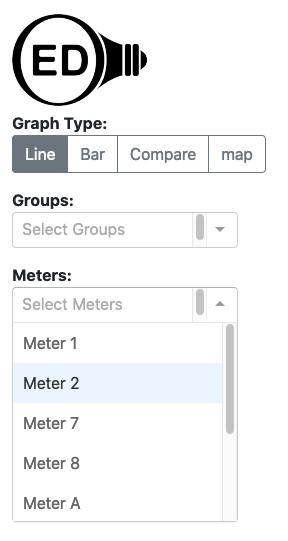
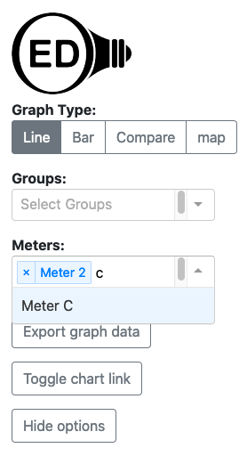

OED Documentation
Meters
Version V0.6.0
The latest version of this page is V1.0.0.
Documentation overview
User documentation
Information
Meters/Groups
Other Features
Admin documentation
Documentation versions for this page
Overview
Meters are the lowest level of data in OED. Readings (energy/resource measurements) are associated with a particular meter. Generally a meter gets its data from a hardware device that measures usage but it can come from any source. For example, a meter might read electrical usage for a building or another area in an organization. OED allows users to graph the readings associated with a meter.
Usage
Each graphic page has a dropdown menu for the available meters as shown in this figure: 
Note if the list of meters is long, you may need to scroll down to get to the one you want. You can do an incremental search for any meter by typing in the input area at the top of the dropdown menu to limit the meters shown to the ones that match what you type. The search will occur anywhere in the meter name (not just the start) and is not case sensitive. This can still be done when meters are already selected and shown at the top of the meter dropdown. This is shown in the next figure where Meter 2 was already selected and "c" was typed in the dropdown to find Meter C. 
You can select any meter by clicking on it so it shows up on the graphic on this page and appear in the list at the top of the meter dropdown. The choice of meters will remain as you change the graphic you are displaying.
If you want to remove a meter from being graphed, you click the "x" to the left of its name in the list at the top of the dropdown menu.
Details
You can view some details on meters on the Meter Viewing page.
If a meter cannot be shown then it will be grayed out. See the maps help page for more information.